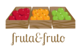

Inicio
Recetas
Quiénes somos
Contacto
Reaproveche mejor los alimentos
Recetas para ahorrar y ganar salud
Nuestras recetas ayudan a aprovechar mejor los alimentos, ahorrar, ganar tiempo y practicidad.